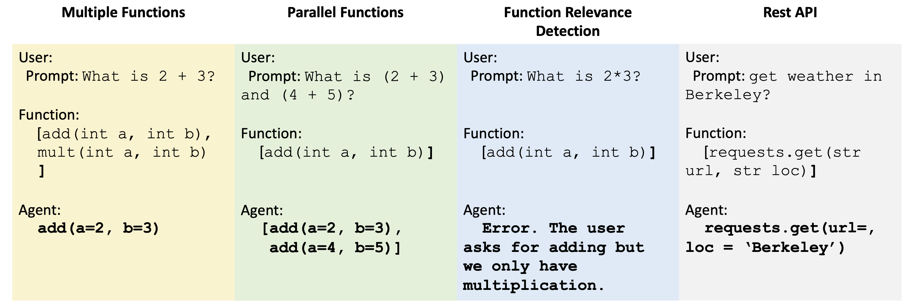
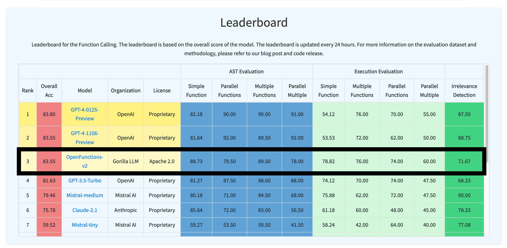

🦍 Gorilla: Large Language Model Connected with Massive APIs
Blog 7: Gorilla OpenFunctions v2
Gorilla OpenFunctions v2
Charlie Cheng-Jie Ji* Huanzhi Mao* Fanjia Yan* Ion Stoica Joseph E. Gonzalez Shishir G. Patil Tianjun Zhang

Gorilla OpenFunctions-v2! SoTA for open-source models. On-par with commercial models.
With the latest iteration of Gorilla OpenFunctions-v2, we are delighted to mark significant advancements in function calling for LLMs within the open-source community. As a direct substitute for its predecessor, Gorilla OpenFunctions-v2 retains its open-source ethos while introducing exciting enhancements. These include support for multiple programming languages such as Python, Java, JavaScript, and REST API - the first among both open-source and closed-source models, alongside the ability to handle multiple and parallel function calls, and the ability to determine function relevance. This update cements Gorilla OpenFunctions-v2's position at the forefront of function calling capabilities among LLMs. Moreover, the drop-in replacement allows for seamless integration of OpenFunctions into a diverse range of applications, from social media platforms like Instagram to delivery services like DoorDash, as well as utility tools including Google Calendar and Stripe.
See What's New!! 🚀
The five new exciting features we are happy to launch with OpenFunctions-v2 are:

- More Data Types: Gorilla OpenFunctions-v2 can now support diverse
languages with expanded support for argument types in function calls. This includes
[string, number, boolean, list, tuple, dict, any]for Python,[string, number, boolean, list, tuple, dict, any]for Java and[string, number, boolean, dict, bigint, array, date, any]for Javascript. For reference, OpenAI and many others only support JSON schema, i.e.,[string, number, integer, object, array, and boolean]. Native support for these types means, you can now plug-and-play openfunctions-v2 without having to weave through string literals. - Parallel & Multiple Functions: Support for Parallel and Multiple Functions. Multiple functions refers to the scenario where the user can input multiple functions when they are not sure which exact function is best to service the prompt. In this scenario, the Gorilla model picks one or more (or none) of the functions provided to respond to the user's requests. In parallel functions, the user's prompt could be serviced by multiple calls to the same function. Gorilla not only supports both of these, but the benefits stack one-on-top of the other!
- Function Relevance Detection: Reduce hallucinations in scenarios when no function, or even no relevant function is provided. Gorilla openfunctions v2 can now automatically detect whether the functions provided to the model can address the user's prompt. Recognizing this, the LLM raises an “Error” message to the user providing them with additional information.
- Enhanced Capabilities for RESTful APIs: Enhance ability to format RESTful API calls. RESTful APIs are a common phenomenon within the web powering many popular software services including Slack, PayPal, etc. Our model is specially trained to handle RESTful API calls with good quality.
Quick Links:
- How well to other function-calling models perform: Berkeley Function Calling Leaderboard
- Play with the model online: Gorilla OpenFunctions-v2 web-demo
- Check out the project: GitHub
- Model (6.91B) on HuggingFace 🤗: gorilla-llm/gorilla-openfunctions-v2
Integrating OpenFunctions-v2 in your App 🔨
Using Gorilla OpenFunctions-v2 is straightforward:
- To help with quick prototyping, we provide a hosted Gorilla Openfunctions-v2 model for inference. Or you can run it locally, or self-host it by accessing the model from HuggingFace. The example below, demonstrates how to invoke the hosted Gorilla Openfunctions-v2 model:
- Prompt the model:
- Format your function call: The model will return the function call based on your request.
- Get Your Function Call: The model will return a Python function call based on your request. This opens up possibilities for developers and non-developers alike, allowing them to leverage complex functionalities without writing extensive code.
import openai def get_gorilla_response(prompt="", model="gorilla-openfunctions-v2", functions=[]): openai.api_key = "EMPTY" # Hosted for free with ❤️ from UC Berkeley openai.api_base = "https://luigi.millennium.berkeley.edu/v1" try: completion = openai.ChatCompletion.create( model="gorilla-openfunctions-v2", temperature=0.0, messages=[{"role": "user", "content": prompt}], functions=functions, ) # completion.choices[0].message.content, string format of the function call # completion.choices[0].message.functions, Json format of the function call return completion.choices[0]
What's the weather like in the two cities of Boston and San Francisco?
query = "What's the weather like in the two cities of Boston and San Francisco?" functions = [ { "name": "get_current_weather", "description": "Get the current weather in a given location", "parameters": { "type": "object", "properties": { "location": { "type": "string", "description": "The city and state, e.g. San Francisco, CA", }, "unit": {"type": "string", "enum": ["celsius", "fahrenheit"]}, }, "required": ["location"], }, } ]
Input:
get_gorilla_response(prompt=query, functions=[functions])
Output:
[get_current_weather(location='Boston, MA'), get_current_weather(location='San Francisco, CA')]
With the example above, you can use Gorilla OpenFunctions-v2 to provide a well formatted output, or call a function with your own definition! Then you can use this freely within your applications and chatbot!
Note: Gorilla through our hosted end-point is currently only supported with
openai==0.28.1. We will migrate to also include support for
openai==1.xx soon with which functions is replaced by
tool_calls.
Performance on Berkeley Function-Calling Leaderboard 🔥

We perform exhaustive and comprehensive evaluation on the Berkeley Function-Calling Leaderboard, we benchmark our model against current state-of-the-art models GPT-4-1106-preview as well as GPT-4 and GPT-3.5-turbo function calling features. In addition, we also compare our model with the other open-source models, demonstrating superior behavior among them. Our evaluation consists of 2k distinct query, API documentation pairs from different domains (including travel, finance, scheduling meetings, etc) and languages (java, javascript, python, REST API).
To dive into details about how our model performs in each category, we provide a detailed table below from the Berkeley Function-Calling Leaderboard. We see that when compared to the current state-of-the-art, GPT-4's function calling, in Python, Gorilla OpenFunctions-v2 does better at simple function calling category, but not as good on function calls that involve multiple and parallel functions. This new feature continues to be an exciting area of research for us, and the open-source community in general. It is worth highlighting that our model provides a very stable executable function calls - function calls that were evaluated by actually executing them - with no intervention in-between. Unsurprisingly, having been trained, our model outperforms GPT-4 on function calls on the programming languages other than Python (e.g., Java, Javascript and REST APIs). For REST APIs, our model provides more stable outputs that includes all the required fields including the url, params and header making our model ripe for immediate adoption.

Gorilla OpenFunctions-v2's performance on Berkeley Function-Calling Leaderboard
"User": "Can you fetch me the weather data for the coordinates
37.8651 N, 119.5383 W, including the hourly forecast for temperature,
wind speed, and precipitation for the next 10 days?"
"Function":
{
...
"parameters":
{
"type": "object",
"properties":
{
"url":
{
"type": "string",
"description": "The API endpoint for fetching weather
data from the Open-Meteo API for the given latitude
and longitude, default
https://api.open-meteo.com/v1/forecast"
}
...
}
}
}
"Gorilla OpenFunctions-v2 output":
{
"name": "requests.get",
"parameters": {
"url": "https://api.open-meteo.com/v1/forecast",
"params":
{
"latitude": "37.8651",
"longitude": "-119.5383",
"forecast_days": 10
},
}
}
"User": "Can you fetch me the weather data for the coordinates
37.8651 N, 119.5383 W, including the hourly forecast for temperature,
wind speed, and precipitation for the next 10 days?"
"Function":
{
...
"parameters":
{
"type": "object",
"properties":
{
"url":
{
"type": "string",
"description": "The API endpoint for fetching weather
data from the Open-Meteo API for the given latitude
and longitude, default
https://api.open-meteo.com/v1/forecast"
}
...
}
}
}
"GPT-4 output":
{
"name": "requests.get",
"parameters": {
"params":
{
"latitude": "37.8651",
"longitude": "-119.5383",
"forecast_days": 10
},
}
}
The left hand side is GPT-4 generated, and the right hand side is openfunctions-v2 generated. As we can see from the above mistakes that when GPT-4 function call is dealing with functions involving complex parameter structures (e.g., dict inside a dict) with default values, the model tends to have trouble, especially on parsing default values. Rather than being a corner-case, the example above is a common paradigm for REST APIs.
OpenFunctions Data Composition & Training 🍕
Gorilla OpenFunctions-v2 is a 6.91B parameter model trained further upon on the Deepseek-Coder-7B-Instruct-v1.5 6.91B model. To train the model, we collect in total of 65,283 question-function-answer pairs from three different sources: Python packages (19,353), Java repositories (16,586), Javascript Repositories (4,245), public-API (6,009), and Command Line Tools (19,090) from various cloud providers. The data composition is shown in the figure below.
After the data collection, we carry out four data augmentations to diversify our training dataset. First, we change the function names. This is critical to ensure the model does not "memorize" the API mapping. Second, we add random (randomly chosen, and random number of) functions to make our data-set compatible with parallel functions. This way we can generate multiple-function datasets from simple functions. Third, we adopt similar strategies of perturbing the prompt to generate scenarios of parallel-functions. We then extend it to also include multiple- and parallel- functions in the same data-points. Finally, we mix some portion of the dataset in which the functions provided during the input is not sufficient to the task. We flag these as `Relevance Detection` scenarios. As with most LLM training, we extensively varied the extents of each data augmentation to train a robust model.
- Function Name Transformation: From the original question-function-answer pairs, we augment this with a differnt function names to avoid the model memorizing the correlation between function names and the question (e.g., 'uber' API is used for transportation).
query + [{'name': 'func1', 'description': 'order takeout'}] -> ans1 => query + [{'name': 'func2', 'description': 'order takeout'}] -> [ans2]
- Parallel Functions Transformation: To handle a more complex case where multiple functions will be selected to answer the user's request, we change the original question to ask for multiple outputs.
query1 + [{'name': 'func1', 'description': 'order takeout'}] -> ans1 => query2 + [{'name': 'func1', 'description': 'order takeout'}] -> [ans1, ans2]
- Multiple Functions Transformation: Transform the original function with multiple function calls included in the training, so that the model can learn to choose which function call to use.
query + [{'name': 'func1', 'description': 'order takeout'}] -> ans1 => query + [{'name': 'func1', 'description': 'order takeout'}, {'name': 'func2', 'description': 'get weather'}] -> [ans1]
- Parallel Multiple Functions Transformation: The combined of the above parallel, and multiple transforms.
query1 + [{'name': 'func1', 'description': 'order takeout'}] -> ans1 => query2 + [{'name': 'func1', 'description': 'order takeout'}, {'name': 'func2', 'description': 'get weather'}] -> [ans1, ans2]
- Function Relevance Detection Transformation: We also include some portion of the dataset in which the functions provided cant not solve the task. We call this `Relevance Detection`.
query1 + [{'name': 'func1', 'description': 'order takeout'}] -> ans1 => query2 + [{'name': 'func1', 'description': 'order takeout'}] -> [Error, the function cannot solve the question.]
Following the completion of the data augmentation process, we further refine the dataset by employing the Rouge score for deduplication, effectively eliminating redundant entries. This step is a recognized standard practice.
Conclusion
We are happy to release gorilla-openfunctions-v2, a 6.91B parameter model trained on
top of the Deepseek-Coder-7B-Instruct-v1.5 LLM.
It takes-in the users prompt along with multiple API calls and returns the functions with the
right arguments. With OpenFunctions we extended native
support for parameter types in Python, Java, and JavaScript, and RESTful APIs.
For more information, check out our blog on Berkeley Function Calling Leaderboard for
evaluation, and our GitHub page for the model.
All of the results in the blog are generated using gorilla-openfunctions-v2.
Licensing:
Gorilla OpenFunctions v2 is distributed under the Apache 2.0 license. This software incorporates elements from the Deepseek model. Consequently, the licensing of Gorilla OpenFunctions v2 adheres to the Apache 2.0 license, with additional terms as outlined in Appendix A of the Deepseek license.
We hope you enjoyed this blog post. We would love to hear from you on Discord, Twitter (#GorillaLLM), and GitHub.
If you would like to cite Gorilla:
@inproceedings{gorilla-openfunctions-v2,
title={Gorilla OpenFunctions v2},
author={Charlie Cheng-Jie Ji, Huanzhi Mao, Fanjia Yan, Shishir G. Patil, Tianjun Zhang,
Ion Stoica, Joseph E. Gonzalez},
year={2024},
howpublished={\url{https://gorilla.cs.berkeley.edu//blogs/7_open_functions_v2.html}},
}